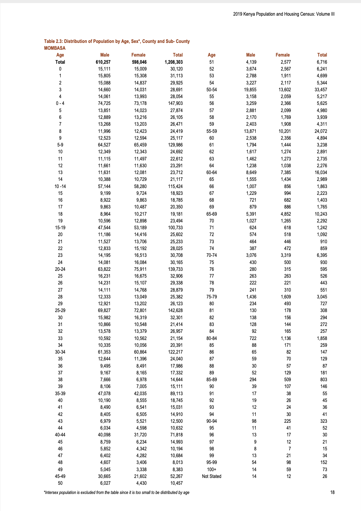

Cleaning and preparing a dataset is difficult work that involves a great deal of decision-making. Planning an endpoint and simulating the dataset that we would like to end up with are key elements of cleaning and preparing data.
It can help to work in an iterative way, beginning with a small sample of the dataset. Write code to fix some aspect, and then iterate and generalize to additional tranches.
During that process we should also develop a series of tests and checks that the dataset should pass. This should focus on key features that we would expect of the dataset.
We should be especially concerned about the class of variables, having clear names, and that the unique values of each variable are as expected given all this.
“Well, Lyndon, you may be right and they may be every bit as intelligent as you say,” said Rayburn, “but I’d feel a whole lot better about them if just one of them had run for sheriff once.”
Sam Rayburn’s reaction to Lyndon Johnson’s enthusiasm about Kennedy’s incoming cabinet, as quoted in The Best and the Brightest(Halberstam 1972, 41).
In this chapter we put in place more-formal approaches for data cleaning and preparation. These are centered around:
plausibility;
internal consistency; and
external consistency.
Plausibility means that the values in the dataset are not obviously wrong. For instance, with few exceptions, currencies should not have alphabetical values in them, names should not have numbers, and velocities should not be faster than the speed of light. Internal consistency means the dataset does not contradict itself. For instance, that might mean that constituent columns actually do add up to be the same as a total column. External consistency means that the dataset does not, in general, contradict outside sources, and is deliberate when it does. For instance, if our dataset purports to be about the population of cities, then we would expect that they are the same as, to a rough approximation, say, those available from relevant censuses on Wikipedia.
SpaceX, the US rocket company, uses cycles of 10 or 50 Hertz (equivalent to 0.1 and 0.02 seconds, respectively) to control their rockets. Each cycle, the inputs from sensors, such as temperature and pressure, are read, processed, and used to make a decision, such as whether to adjust some setting (Martin and Popper 2021). We use a similar iterative approach of small adjustments for data cleaning and preparation. Rather than trying to make everything perfect from the start, we get started, and iterate using a process of small, continuous, improvements.
To a large extent, the role of data cleaning and preparation is so great that the only people that understand a dataset, are those that who have cleaned it. Yet, the paradox of data cleaning is that often those that do the cleaning and preparation are those that have the least trust in the resulting dataset. At some point in every data science workflow, those doing the modelling should get their hands dirty with data cleaning. Even though few want to do it (Sambasivan et al. 2021), it is a far more influential stage than modelling. To clean and prepare data is to make many decisions, some of which may have important effects on our results. For instance, Northcutt, Athalye, and Mueller (2021) find the test sets of some popular datasets in computer science contain, on average, labels that are wrong in around three per cent of cases. This has the potential to result in incorrect conclusions.
For a long time, data cleaning and preparation was largely overlooked. We now realize that was a mistake. It has been difficult to trust results in disciplines that apply statistics for some time. The reproducibility crisis, which started in psychology but has now extended to many other fields in the physical and social sciences, brought to light issues such as p-value ‘hacking’, researcher degrees of freedom, file-drawer issues, and even data and results fabrication (Gelman and Loken 2013). Steps are now being put in place to address these. But there has been relatively little focus on the data gathering, cleaning, and preparation aspects of applied statistics, despite evidence that decisions made during these steps greatly affect statistical results (Huntington-Klein et al. 2021). In this chapter we focus on these issues.
While the statistical practices that underpin data science are themselves correct and robust when applied to simulated datasets, data science is not typically conducted with these types of datasets. For instance, data scientists are interested in ‘messy, unfiltered, and possibly unclean data—tainted by heteroskedasticity, complex dependence and missingness patterns—that until recently were avoided in polite conversations between more traditional statisticians’ (Craiu 2019). Big data does not resolve this issue, and may even exacerbate it. For instance, population inference based on larger amounts of poor-quality data will just lead to more confidently wrong conclusions (Meng 2018). The problems that are found in much of applied statistics research are not necessarily associated with researcher quality, or their biases (Silberzahn et al. 2018). Instead, they are a result of the environment within which data science is conducted. This chapter provides an approach and tools to explicitly think about this work.
Gelman and Vehtari (2020) writing about the most important statistical ideas of the past 50 years say that each of them enabled new ways of thinking about data analysis and they brought into the tent of statistics, approaches that ‘had been considered more a matter of taste or philosophy’. The focus on data cleaning and preparation in this chapter is analogous, insofar, as it represents a codification, or bringing inside the tent, of aspects that are typically, incorrectly, considered those of taste rather than core statistical concerns.
The workflow for data cleaning and preparation that we advocate is:
Save the raw data.
Begin with an end in mind.
Execute that plan on a small sample.
Write tests and documentation.
Iterate the plan.
Generalize the execution.
Update tests and documentation.
We will need a variety of skills to be effective, but this is the very stuff of data science. The approach needed is some combination of dogged and sensible. Perfect is very much the enemy of good enough when it comes to data cleaning. And to be specific, it is better to have 90 per cent of the data cleaned and prepared, and to start exploring that, before deciding whether it is worth the effort to clean and prepare the remaining 10 per cent. Because that remainder will likely take an awful lot of time and effort.
All data regardless of whether they were obtained from farming, gathering, or hunting, will have issues. It is critical that we have approaches that can deal with a variety of concerns, and more importantly, understand how they might affect our modelling (Van den Broeck et al. 2005). To clean data is to analyze data. This is because the process forces us to make choices about what we value in our results (Au 2020).
11.2 Workflow
11.2.1 Save a copy of the raw data
The first step is to save the raw data into a separate, local, folder. It is important to save this raw data, to the extent that is possible, because it establishes the foundation for reproducibility (Wilson et al. 2017). If we are obtaining our data from a third-party, such as a government website, then we have no control over whether they will continue to host that data, update it, or change the address at which it is available. Saving a local copy also reduces the burden that we impose on their servers.
Having locally saved the raw data we must maintain a copy of it in that state, and not modify it. As we begin to clean and prepare it, we instead create a copy of the dataset. Maintaining the initial, raw, state of the dataset, and using scripts to create the dataset that we are interested in analyzing, ensures that our entire workflow is reproducible.
11.2.2 Begin with an end in mind
Planning the endpoint forces us to begin with an end in mind, and is important for a variety of reasons. As with scraping data, introduced in Chapter 9, it helps us to be proactive about scope-creep. But with data cleaning it additionally forces us to really think about what we want the final dataset to look like.
The first step is to sketch the dataset that we are interested in. The key features of the sketch will be aspects such as the names of the columns, their class, and the possible range of values. For instance, we might be interested in the populations of US states. So our sketch might look like Figure 11.1.
Figure 11.1: Planned dataset of US states and their populations
In this case, the sketch forces us to decide that we want full names rather than abbreviations for the state names, and the population to be measured in millions. The process of sketching this endpoint has forced us to make decisions early on, and be clear about our desired endpoint.
We then implement that using code to simulate data. Again, this process forces us to think about what reasonable values look like in our dataset because we are literally forced to decide which functions to use. We need to think carefully about the unique values of each variable. For instance, if the variable is meant to be ‘gender’ then unique values such as ‘male’, ‘female’, ‘other’, and ‘unknown’ may be expected, but a number such as ‘1,000’ would likely be wrong. It also forces us to be explicit about names because we must assign the output of those functions to a variable. For instance, we could simulate some population data for the US states.
library(tidyverse)set.seed(853)simulated_population <-tibble(state = state.name,population =runif(n =50, min =0, max =50) |>round(digits =2) )simulated_population
# A tibble: 50 × 2
state population
<chr> <dbl>
1 Alabama 18.0
2 Alaska 6.01
3 Arizona 24.2
4 Arkansas 15.8
5 California 1.87
6 Colorado 20.2
7 Connecticut 6.54
8 Delaware 12.1
9 Florida 7.9
10 Georgia 9.44
# … with 40 more rows
Our purpose, during data cleaning and preparation, is to then bring our raw data close to that plan. Ideally, we would plan so that the desired endpoint of our dataset is ‘tidy data’. This was introduced in Chapter 3, but briefly, it means that (Wickham and Grolemund 2022; Wickham 2014, 4):
each variable is in its own column;
each observation is in its own row; and
each value is in its own cell.
At this stage it is important to begin to think about plausibility and internal consistency. What are some of the features that we know these data should have? Note these down as you got through the process of simulating the dataset because we will draw on them to write tests.
11.2.3 Start small
Having thoroughly planned we can turn to the raw data that we are dealing with. Usually, regardless of what the raw data look like, we want to manipulate them into a rectangular dataset as quickly as possible. This allows us to use familiar tidyverse approaches. For instance, let us assume that we are starting with a .txt file.
The first step is to look for regularities in the dataset. We want to end up with tabular data, which means that we need some type of delimiter to distinguish different columns. Ideally this might be features such as a comma, a semicolon, a tab, a double space, or a line break. For instance, in the following case we would take advantage of the comma.
In more challenging cases there may be some regular feature of the dataset that we can take advantage of. For instance, sometimes various text is repeated, as in the following case with ‘State is’ and ‘and population is’.
State is Alabama and population is 5 million.
State is Alaska and population is 0.7 million.
State is Arizona and population is 7 million.
State is Arkansas and population is 3 million.
State is California and population is 40 million.
In this case, although we do not have a traditional delimiter, we can use the regularity of ‘State is’ and ‘and population is’ to get what we need. A more difficult case is when we do not have line breaks. This final case is illustrative of that.
Alabama 5 Alaska 0.7 Arizona 7 Arkansas 3 California 40
One way to approach this is to take advantage of the different classes and values that we are looking for. For instance, in this case, we know that we are after US states, so there are only 50 possible options (setting D.C. to one side for the time being), and we could use the presence of these as a delimiter. We could also use the fact that population is a number, and so split based on a space followed by a number.
We will now convert this final case into tidy data using tidyr(Wickham 2021).
# A tibble: 5 × 2
state population
<chr> <chr>
1 Alabama 5
2 Alaska 0.7
3 Arizona 7
4 Arkansas 3
5 California 40
11.2.4 Write tests and documentation
Having established a rectangular dataset, albeit a messy one, we should begin to look at the classes that we have. We do not necessarily want to fix the classes at this point, because that can result in lost data. But we look at the class to see what it is, and then compare it to our simulated dataset to see where it needs to get to. We note the columns where it is different.
Before changing the class and before going onto more bespoke issues, we should deal with some of the common issues in each class. Some common issues are:
Commas and other punctuation, such as denomination signs, in columns that should be numeric.
Inconsistent formatting of dates, such as ‘December’ and ‘Dec’ and ‘12’.
Unexpected character encoding, especially in Unicode, which may not display consistently. By way of background, character encoding is needed for computers, which are based on strings of 0s and 1s, to be able to consider symbols such as alphabets. One source of particularly annoying data cleaning issues is different character encoding, particularly when dealing with foreign languages or odd characters. In general, we use UTF-8. The encoding of a character vector can be found using Encoding().
Typically, we want to fix anything immediately obvious. For instance, we should remove commas that have been used to group digits in currencies. However, the situation will typically quickly become dire and feel overwhelming. What we need to do is to look at the unique values in each variable, and then triage what we will fix. We make the decision of how to triage based on what is likely to have the largest impact. That usually means starting with counts of the observations, sorting them in descending order, and then dealing with each as they come.
When the tests of membership are passed, then finally we can change the class, and run all the tests again. We have adapted this idea from the software development approach of unit testing. Tests are crucial because they enable us to understand whether software (or in this case data) is fit for purpose (Wilson 2021).
Let us run through an example with a collection of strings, some of which are slightly wrong. This type of output is typical of OCR, which often gets most of the way there, but not quite.
The most common unique observation is the correct one. The next one—‘PatricIa’—looks like the ‘i’ has been incorrectly capitalized, and the one after that—‘8atricia’—is distinguished by an ‘8’ instead of a ‘P’. We can fix these issues with str_replace_all() and then redo the count.
Already this is much better and 60 per cent of the values are correct, compared with earlier where it was 30 per cent. There are two more obvious errors—‘Ptricia’ and ‘Patncia’—with the first missing an ‘a’ and the second having an ‘n’ where the ‘ri’ should be. Again, we can fix those.
# A tibble: 3 × 2
names n
<chr> <int>
1 "Patricia" 8
2 "Patric1a" 1
3 "Patricia " 1
We have achieved an 80 per cent outcome with not too much effort. The two remaining issues are more subtle. The first has occurred because the ‘i’ has been incorrectly coded as a ‘1’. In some fonts this will show up, but in others it will be more difficult to see. This is a common issue, especially with OCR, and something to be aware of. The second is similarly subtle and occurs because of a trailing space. Trailing and leading spaces are another common issue and we can address them with str_trim(). After we fix these two remaining issues then we will have all entries corrected.
# A tibble: 1 × 2
names n
<chr> <int>
1 Patricia 10
We have been doing the tests in our head in this example. We know that we are hoping for ‘Patricia’. But we can start to document this test as well. One way is to look to see if values other than ‘Patricia’ exist in the dataset.
check_me <- cleaned_data |>filter(names !="Patricia")if (nrow(check_me) >0) {print("Still have values that are not Patricia!")}
We can make things a little more imposing by stopping our code execution if the condition is not met with stopifnot(). To use that we define a condition that we would like met. We could implement this type of check throughout our code. For instance, if we expected there to be a certain number of rows in the dataset, or for a certain column to have various properties, such as being an integer, or a factor.
stopifnot(nrow(check_me) ==0)
We can use stopifnot() to ensure that our script is working as expected as it goes through.
Another way to write tests for our dataset is to use testthat(Wickham 2011). Although developed for testing packages, we can use the same functionality to test our datasets. For instance, we can use expect_length() to check the length of a dataset and expect_equal() to check the content.
If the tests pass then nothing happens, but if the tests fail then the script will stop.
What do we test? It is a difficult problem, and we detail a range of more-specific tests in the next section. But broadly we test what we have, against what we expect. The engineers working on the software for the Apollo program in the 1960s initially considered writing tests to be ‘busy work’ (Mindell 2008, 170). But they eventually came to realize that NASA would not have faith that software could be used to send men to the moon unless it was accompanied by a comprehensive suite of tests. And it is the same for data science.
Start with tests for plausibility. These will typically be aspects such as the class of the variables, and then their unique values. For instance, if we were using a recent dataset then columns that are years could be tested to ensure that all elements have four digits and start with a ‘2’. Baumgartner (2021) describes this as tests on the schema. After that turn to checks of internal consistency. For instance, if there is a column for different responses, then check that the sum of those is equal to the total column. Finally, turn to tests for external consistency. Here we want to use outside information to inform our tests. For instance, if we had a column of, say, NMR for Germany (this concept was introduced in Chapter 2), then we could look at the estimates from, say, the WHO, and ensure our NMR column is consist with these. Experienced analysts do this all in their head. This is great, but the issue is that it does not scale, can be faulty and inconsistent, and overloads reputation. We return to this issue in Chapter 14 in the context of modelling.
We write tests throughout our code, rather than only right at the end. In particular using stopifnot() statements on as many intermediate steps as possible ensures that the dataset is being cleaned in a way that we expect. For instance, when merging two datasets we could check that the column names in the datasets are unique, apart from the column/s to be used as the key. Or that the number of observations of each type is being carried through appropriately. And even that the dimensions of the dataset are not being unexpectedly changed.
11.2.5 Iterate, generalize, and update
We could now iterate the plan. In this most recent case, we started with 10 entries. There is no reason that we could not increase this to 100 or even 1,000. We may need to generalize the cleaning procedures and tests. But eventually we would start to being the dataset into some sort of order.
11.3 Checking and testing
Robert Caro, the biographer of Lyndon Johnson introduced in Chapter 5, spent years tracking down everyone connected to the 36th President of the United States. Caro and his wife went so far as to live in Texas Hill Country for three years so that they could better understand where Johnson was from. When Caro heard that Johnson, as a senator, would run to the Senate from where he stayed in D.C., he ran that route multiple times himself to try to understand why Johnson was running. Caro eventually understood it only when he ran the route as the sun was rising—just as Johnson had done; it turns out that the sun hits the Senate Rotunda in a particularly inspiring way (Caro 2019, 156). This background work enabled him to uncover aspects that no one else knew. For instance, Johnson almost surely stole his first election win (Caro 2019, 116). We need to understand our data to this same extent. We must turn every page, and go to every extreme.
The idea of negative space is well established in design. It refers to that which surrounds the subject. Sometimes negative space is used as an effect, for instance the logo of FedEx, an American logistics company, has negative space between the E and x that creates an arrow. In a similar way, we want to be cognizant of the data that we have, and the data that we do not have (Hodgetts 2022). We are worried that the data that we do not have somehow has meaning, potentially even to the extent of changing our conclusions. When we are cleaning data, we are looking for anomalies. We are interested in values that are in there that should not be, but also the opposite situation—values that are missing that should not be. There are three tools that we use to identify these situations: graphs, counts, and tests.
11.3.1 Graphs
Graphs are an invaluable tool when cleaning data, because they show each observation in the dataset, in relation to the other observations. They are especially useful for identifying when a value does not belong. For instance, if a value is expected to be numerical, but it is still a character then it will not plot and a warning will be displayed. Graphs will be especially useful for numerical data, but are still useful for text and categorical data. Let us pretend that we have a situation where we are interested in a person’s age, for some youth survey. We have the following data:
Figure 11.2: The ages in the simulated youth survey dataset clearly identify a likely data issue
Figure 11.2 shows the unexpected value of 150. The most likely explanation is that the data were incorrectly entered, missing the decimal place, and should be 15.0. We could fix that, document it, and then redo the graph, which would show that everything seemed more plausible.
11.3.2 Counts
We want to focus on getting most of the data right. So we are interested in the counts of unique values. Hopefully a majority of the data are concentrated in the most common counts. But it can also be useful to invert it, and see what is especially uncommon. The extent to which we want to deal with these depends on what we need. Ultimately, each time we fix one we are getting very few additional observations, potentially even just one. Counts are especially useful with text or categorical data, but can be helpful with numerical data as well.
Let us see an example of text data, each of which is meant to be ‘Australia’.
# A tibble: 5 × 2
country n
<chr> <int>
1 Australia 4
2 Australie 3
3 Aeustralia 1
4 Austraia 1
5 Austrelia 1
The use of this count clearly identifies where we should spend our time: changing ‘Australie’ to ‘Australia’ would almost double the amount of usable data.
11.3.3 Tests
Some things are so important that we require that the cleaned dataset have them. These are conditions that we should check. They would typically come out of experience, expert knowledge, or the planning and simulation stages. For instance, there should be no negative numbers in an age variable, and no ages above 140. For these we could specifically require that the condition is met. Another example is when doing cross-country analysis, then a list of country names that we know should be in our dataset would be useful. Our test would then be that there were: 1) values not in that list that were in our dataset, or, vice versa; 2) countries that we expected to be in there that were not.
To have a concrete example, let us consider if we were doing some analysis about the five largest counties in Kenya. From talking with experts we find these are: ‘Nairobi’, ‘Kiambu’, ‘Nakuru’, ‘Kakamega’, and ‘Bungoma’. Let us create that variable first.
At this point we can compare this with our known correct variable. We check both ways i.e. is there anything in the correct variable not in our dataset, and is there anything in the dataset not in our correct variable. We use our check conditions to decide whether we are finished or not.
if(all(top_five_kenya_fixed_1_8$county |>unique() %in% correct_kenya_counties)) {"The cleaned counties match the expected countries"} else {"Not all of the counties have been cleaned completely"}
[1] "Not all of the counties have been cleaned completely"
if(all(correct_kenya_counties %in% top_five_kenya_fixed_1_8$county |>unique()) ) {"The expected countries are in the cleaned counties"} else {"Not all the expected countries are in the cleaned counties"}
[1] "The expected countries are in the cleaned counties"
And so it is clear that we still have cleaning to do because not all the counties match what we were expecting.
We will talk about explicit tests for class and dates, given their outsized importance, and how common it is for them to go wrong. But other aspects to explicitly consider testing include:
Variables of monetary values should be tested for reasonable bounds given the situation. In some cases negative values will not be possible. Sometimes a top bound can be identified. Monetary variables should be numeric. They should not have commas or other separators. They should not contain symbols such as a currency signs or semicolons.
Variables of population values should likely not be negative. Populations of cities should likely be somewhere between 100,000 and 50,000,000. They again should be numeric, and contain only numbers, no symbols.
Names should be character variables. They likely do not contain numbers. They may contain some limited set of symbols and this would be context specific.
More generally, work with experts and draw on prior knowledge to work out some reasonable features for the variables of interest and then implement these.
11.3.4 Class
It is sometimes said that Americans are obsessed with money, while the English are obsessed with class. In the case of data cleaning and preparation we need to be English. We introduced class in Chapter 3 and here we focus on ‘numeric’, ‘character’, and ‘factor’. Explicit checks of the class of variables are essential. Accidentally assigning the wrong class to a variable can have a large effect on subsequent analysis. In particular:
check whether some value should be a number or a factor; and
check that values are actually numbers not characters.
To understand why it is important to be clear about whether a value is a number or a factor, consider the following situation:
Let us start with ‘group’ as an integer and use logistic regression, which we cover in more detail in Chapter 14. We can then try it as a factor. Table 11.1 clearly shows how different the results are and highlights the absolute necessity of getting the class of variables used in regression right. The interpretation of the variable is completely different.
library(modelsummary)models <-list("Group as integer"=lm(response~group_as_integer, data = simulated_class_data),"Group as factor"=lm(response~group_as_factor, data = simulated_class_data))modelsummary(models)
Table 11.1: Examining the effect of class on regression results
Group as integer
Group as factor
(Intercept)
0.840
0.750
(0.450)
(0.283)
group_as_integer
−0.160
(0.231)
group_as_factor2
−0.417
(0.432)
group_as_factor3
−0.250
(0.489)
Num.Obs.
9
9
R2
0.064
0.138
R2 Adj.
−0.070
−0.150
AIC
18.4
19.6
BIC
18.9
20.4
F
0.479
0.478
RMSE
0.48
0.46
11.3.5 Dates
A shibboleth for whether someone has worked with dates before is their reaction when you tell them you are going to be working with dates. If they immediately involuntarily shudder and share a horror story, then they have worked with dates before, and any other reaction means they have not.
Extensive checking of dates is critical. Ideally, we would like dates to be in the following format: YYYY-MM-DD. There are differences of opinion as to what is an appropriate date format in the broader world, and reasonable people can differ on whether 1 July 2022 or July 1, 2022, is better, but YYYY-MM-DD is the only acceptable format for datasets.
A few tests that could be useful include:
If a column is days of the week, then test that the only components are Monday, Tuesday, … Sunday. Further, test that all seven days are present. Similarly, for month.
Test that the numbers of days are appropriate for each month, for instance, check that September has 30 days, etc.
Check whether the dates are in order in the dataset.
Check that the years are complete and appropriate to the analysis period.
In Chapter 2 we introduced a dataset of homeless shelter usage in Toronto in 2021 using opendatatoronto(Gelfand 2020). Here we use that same dataset, but for 2017 to 2020, to illustrate one process for checking dates. We first need to download the data.1
The main issue with this dataset will be the dates. For 2017-2019 (inclusive) we will find appear to be year-month-day, but for 2020 they seem to be month-day-year. The separator is also inconsistent, changing from ‘-’ to ‘/’. We first fix that, check our guesses, and then get to a more pernicious and subtle issue. When working with dates, we draw heavily on lubridate(Grolemund and Wickham 2011).
We can check whether the guess of the date orderings was at least plausible by looking at the distribution of year (Table 11.2), month (Figure 11.3), and day components (Figure 11.4). We are interested in differences between the three years 2017-2019 and 2020.
Figure 11.4: Counts, by third component of occupancy date, of entries for 2017-2020
It is increasingly clear that our guess that the order was swapped around for 2020 seems right. We would be especially concerned if the distribution of the days was not roughly uniform, or if we had values other than [1-12] in the month.
One graph that is especially useful when cleaning a dataset is the order the observations appear in the dataset. For instance, we would generally expect that there would be a rough ordering in terms of date. To examine whether this is the case, we can graph the date variable in the order it appears in the dataset (Figure 11.5).
While this is just a quick graph it illustrates the point—the data are not in order of date in the dataset. If they were in order, then we would expect them to be along the diagonal. It is odd that the data are not in order, especially as there appears to be something systematic initially. We can summarize the data to get a count of occupancy by day.
library(tidyr)# Based on code by Lisa Lendwaytoronto_shelters_by_day <- earlier_toronto_shelters |># We only want rows with both occupancy and capacity drop_na(occupancy, capacity) |># We want to know the occupancy by date and sectorgroup_by(date) |>summarize(occupancy =sum(occupancy),capacity =sum(capacity),usage = occupancy / capacity, .groups ='drop')
We are interested in the availability of shelter spots in Toronto for each day (Figure 11.6 (a)). And we can focus on 2017, as that is where the biggest issue is and facet by month (Figure 11.6 (b)).
Figure 11.6: Occupancy per day in Toronto shelters
It is clear there is an issue with the first twelve days of the month. We noted that when we look at the data it is a bit odd that it is not in order. We can take another look at that by going back to the data as it was given to us (as opposed to the counts by day that we have been using). Although there is no rule that says the dataset must be in order of the date, if it were, then all the points would lie on the diagonal line. We have a lot of deviation from that. To get a sense of what we are expecting let us look at all four years (Figure 11.7).
earlier_toronto_shelters |>mutate(counter =1:nrow(earlier_toronto_shelters)) |>ggplot(aes(x = counter, y = date)) +geom_point(alpha =0.3) +facet_wrap(vars(year(date)),scales ="free") +labs(x ="Row in the dataset",y ="Date of that row") +theme_minimal()
Figure 11.7: Date of each row in order (2017-2020)
It looks like 2020 is roughly as we would expect, although with some potential weirdness at the start. 2019 has a few odd situations, but not too many. 2018 has a small cluster early in the dataset and then possibly something systematic toward the middle. But it is clear that 2017 has a large number of systematic issues. These affect a lot of observations, so we prioritize and focus our attention here.
In general, it seems that it might be the case that in 2017 the first 12 days are the wrong way around, i.e. we think it is year-month-day, but it is actually year-day-month, but there are exceptions. As a first pass, we can flip those first 12 days of each month and see if that helps. It will be fairly blunt, but hopefully gets us somewhere.
Now let us take a look (Figure 11.8). It is probably a little blunt. For instance, notice there are now no entries below the diagonal (Figure 11.8 (a)). But we can see that has almost entirely taken care of the systematic differences (Figure 11.8 (b)).
library(tidyr)earlier_toronto_shelters_2017_flipped |>mutate(counter =1:nrow(earlier_toronto_shelters_2017_flipped)) |>filter(year(date) ==2017) |>ggplot(aes(x = counter, y = changed_date)) +geom_point(alpha =0.3) +labs(x ="Row in the dataset",y ="Date of that row") +theme_minimal()earlier_toronto_shelters_2017_flipped |>drop_na(occupancy, capacity) |>group_by(changed_date) |>summarise(occupancy =sum(occupancy), .groups ='drop') |>filter(year(changed_date) ==2017) |>ggplot(aes(x =day(changed_date), y = occupancy)) +geom_point(alpha =0.3) +scale_y_continuous(limits =c(0, NA)) +labs(color ="Type",x ="Changed day",y ="Occupancy (number)") +facet_wrap(vars(month(changed_date, label =TRUE)),scales ="free_x") +theme_minimal()
(a) Date of each row in order in 2017 after adjustment
(b) Toronto shelters daily occupancy in 2017 after adjustment
Figure 11.8: Adjusted dates, occupancy in Toronto shelters
11.4 Naming things
An improved scanning software we developed identified gene name errors in 30.9% (3,436/11,117) of articles with supplementary Excel gene lists; a figure significantly higher than previously estimated. This is due to gene names being converted not just to dates and floating-point numbers, but also to internal date format (five-digit numbers).
Names matter. The land on which much of this book was written is today named Canada, but for a long time was known as Turtle Island. Similarly, there is a big rock in the center of Australia. For a long time, it was called Uluru, then it was known as Ayers Rock. Today it has a dual name that combines both. And in parts of the US South, including signage surrounding the South Carolina State House, the US Civil War is referred to as the War of Northern Aggression. In these examples, the name that is used conveys information, not only about the user, but about the circumstances. Even the British Royal Family recognize the power of names. In 1917 they changed from the House of Saxe-Coburg and Gotha to the House of Windsor. It was felt that the former was too Germanic given World War I was ongoing. Names matter in everyday life. And they matter in our code too.
Names impart meaning (Kimmerer 2013, 34). By ignoring existing names, we ignore what has come before us. The importance of names, and of how existing relationships were ignored by re-naming, was clear in those cases mentioned above, but we see it in data science as well. We need to be careful when we name our datasets, variables, and functions, even our statistical methods! Tukey (1962) essentially defined what we today call data science, but it was popularized by folks in computer science in the late 2000s who ignored, either deliberately or through ignorance, what came before them. With that came the renaming of concepts that were well-established in the fields that computer science had expanded into. For instance, the use of binary variables in regression, sometimes called ‘dummy variables’, is often called one-hot encoding in computer science. The social sciences went through a similar experience, starting in the 1980s, with economics expanding in a similarly (and self-described) imperialistic way (Lazear 2000). The social sciences now recognize the cost of this, and data science should try to avoid it. No area of study is ever actually without existing claims. And recognizing, adopting, and using existing names and practices is important.
Names are critical and worthy of special attention because (Hermans 2021):
they help document our code as they are, by definition, contained in the code;
they make-up a large proportion of any script;
they are referred to a lot by others; and
they help the reader understand what is happening in the code.
In addition to respecting the nature of the data, names need to satisfy two additional considerations:
they need to be machine readable, and
they need to be human readable.
Machine readable names is an easier standard to meet, but usually means avoiding spaces and special characters. A space can be replaced with an underscore. For instance, we prefer ‘my_data’ to ‘my data’. Avoiding spaces enables tab-completion which makes us more efficient. It also helps with reproducibility because spaces are considered differently by different operating systems.
Usually, special characters should be removed because they can be inconsistent between different computers and languages. This is especially the case with slash and backslash, asterisk, and single and double quotation marks, none of which should, almost, ever be used in names.
Names should also be unique within a dataset, and unique within a collection of datasets unless that particular column is being deliberately used as a key to join different datasets. This usually means that the domain is critical for effective names, and when working as part of a team this all gets much difficult (Hermans 2017).
An especially useful function to use to get closer to machine readable names is clean_names() from janitor(Firke 2020). This deals with those issues mentioned above as well as a few others.
library(janitor)some_bad_names <-tibble('First'=c(1),'second name has spaces'=c(1),'weird#symbol'=c(1),'InCoNsIsTaNtCaPs'=c(1) )bad_names_made_better <- some_bad_names |>clean_names()some_bad_names
# A tibble: 1 × 4
First `second name has spaces` `weird#symbol` InCoNsIsTaNtCaPs
<dbl> <dbl> <dbl> <dbl>
1 1 1 1 1
bad_names_made_better
# A tibble: 1 × 4
first second_name_has_spaces weird_number_symbol in_co_ns_is_ta_nt_ca_ps
<dbl> <dbl> <dbl> <dbl>
1 1 1 1 1
‘Programs must be written for people to read, and only incidentally for machines to execute’ (Abelson and Sussman 1996). In the same way that we emphasized in Chapter 5 that we write papers for the reader, here we emphasize that we write code for the reader. Human readable names require an additional layer, and extensively more consideration than machine readable ones. For instance, following Lockheed Martin (2005, 25), we should avoid names that only differ by the use of the letter ‘O’, instead of the number ‘0’ or the letter ‘D’. Similarly, ‘S’ with ‘5’. We need to consider other cultures and how they may interpret some of the names that we are using. We also need to consider different experience levels that subsequent users of the dataset may have. This is both in terms of experience with data science, but also experience with similar datasets. For instance, a column called ‘flag’ is often used to signal that a column contains data that needs to be followed up with or treated carefully in some way. An experienced analyst will know this, but a beginner will not. Try to use meaningful names wherever possible (Lin, Ali, and Wilson 2021). It has been found that shorter names may take longer to comprehend (Hofmeister, Siegmund, and Holt 2017), and so it is often useful to avoid uncommon abbreviations where possible.
Bryan (2015) additionally recommends that file names, in particular, should consider the default ordering that a file manager will impose. This might mean adding prefixes such as ‘00-’, ‘01-’, etc to filenames, which might involve left-padding with zeros depending on the number of files. Critically it means using ISO 8601 for dates, which means that 2 December 2022 would be written ‘2022-12-02’. The reason for using such file names is to provide information to other people about the order of the files.
One interesting feature of R is that in certain cases partial matching on names is possible. For instance:
This behavior is not possible within the tidyverse, for instance if data.frame were replaced with tibble in the above code. Partial matching should almost never be used. It makes it more difficult to understand code after a break, and for others to come to it fresh.
R, Python, and many of the other languages that are commonly used for data science are dynamically typed, as opposed to static typed. This means that class can be defined independently of declaring a variable. One interesting area of research is going partially toward that by including class in the name. In computer science, a variant of this is known as Hungarian notation and extensively used at Microsoft for Word and Excel (Hermans 2021, 74). While Hungarian notation fell out of favor in computer science, in data science it may bring considerable benefits, and best practice is an area of open research
Riederer (2020) advises using column names as contracts, through establishing a controlled vocabulary for column names. In this way, we would define a set of words that we can use in column names. In the controlled vocabulary of Riederer (2020) a column could start with an abbreviation for its class, then something specific to what it pertains to, and then various details.
For instance, we could consider column names of ‘age’ and ‘sex’. Following Riederer (2020) we may change these to be more informative of the class and other information.
# A tibble: 4 × 2
age sex
<int> <fct>
1 1 male
2 3 male
3 35 female
4 36 male
riederer_names
# A tibble: 4 × 2
integer_age_respondent factor_sex_respondent
<int> <fct>
1 1 male
2 3 male
3 35 female
4 36 male
11.5 1996 Tanzanian DHS
As introduced in Chapter 9, the Demographic and Health Surveys play an important role in gathering data in areas where we may not have other datasets. Here we will clean and prepare a DHS table about household populations in Tanzania in 1996.
When we have a PDF and want to read the content into R, then pdf_text() from pdftools(Ooms 2019) is useful. It works well for many recently produced PDFs because the content is text which it can extract. But if the PDF is an image, then pdf_text() will not work. Instead, the PDF will first need to go through OCR, which was introduced in Chapter 9.
In this case we are interested in Table 2.1, which is on the 33rd page of the PDF. That page looks like (Figure 11.9).
Figure 11.9: The page of interest in the 1996 Tanzanian DHS
We use stri_split_lines() from stringi(Gagolewski 2020) to focus on that particular page.
library(stringi)# Based on Bob Rudis: https://stackoverflow.com/a/47793617tanzania_dhs_page_33 <-stri_split_lines(tanzania_dhs[[33]])[[1]]
We first want to remove all the written content and focus on the table. We then want to convert that into a tibble so that we can use our familiar tidyverse approaches.
# A tibble: 25 × 1
all
<chr>
1 " Urban Rural …
2 ""
3 " Age group Male Female Total Male Female …
4 ""
5 ""
6 " 0-4 16.4 13.8 15.1 18.1 17.1 …
7 " 5-9 13.5 13.0 13.2 17.5 16,0 …
8 " 10-14 12.6 13.1 12.8 15.3 13.5 …
9 " 15-19 10.8 11.3 11.1 9.8 8.8 …
10 " 20-~ 9.4 12.2 10,8 5.9 8.2 …
# … with 15 more rows
All the columns have been collapsed into one, so we need to separate them. We will do this based on the existence of a space, which means we first need to change ‘Age group’ to ‘Age-group’ because we do not want that separated.
Now we need to clean-up the rows and columns. One helpful approach to work out what we need to remove, is to look at what is left if we temporarily remove everything that we know we want. Whatever is left is then a candidate for actually being removed. In this case we know that we want the columns to contain numbers.
In this case we can see that some commas, semicolons have been incorrectly considered decimal places. Also, some tildes and blank lines need to be removed. After that we can impose the correct class.
Finally, let us consider an extensive example and gather, clean, and prepare some data from the 2019 Kenyan census. The distribution of population by age, sex, and administrative unit from the 2019 Kenyan census can be downloaded here. While this format as a PDF makes it easy to look up a particular result, it is not overly useful if we want to model the data. In order to be able to do that, we need to convert a PDF of Kenyan census results of counts, by age and sex, by county and sub-county, into a tidy dataset that can be analyzed. We use janitor(Firke 2020), pdftools(Ooms 2019), purrr(Henry and Wickham 2020), tidyverse(Wickham et al. 2019), and stringi(Gagolewski 2020).
We can use pdf_text() from pdftools(Ooms 2019) again here.
kenya_census <-pdf_text("2019_Kenya_census.pdf")
In this example we will need to parse many pages, but we can see an example page of the PDF of the 2019 Kenyan census (Figure 11.10).

Figure 11.10: Example page from the 2019 Kenyan census
11.6.1.1 Make rectangular
In the Tanzanian example, we were interested in only one page, so we made our modifications directly to that page. Here we want to consider many pages, so we instead write a function, as introduced in Chapter 3, and then apply it to many pages. The first challenge is to get the dataset into a format that we can more easily manipulate. We will consider each page of the PDF and extract the relevant parts. To do this, we first write a function, and then apply it to each page.
# The function is going to take an input of a page numberget_data <-function(i){# Focus on the page of interest just_page_i <-stri_split_lines(kenya_census[[i]])[[1]] # Remove blank lines just_page_i <- just_page_i[just_page_i !=""]# Get and format the location area <- just_page_i[3] |>str_squish() area <-str_to_title(area)# Get the type of table type_of_table <- just_page_i[2] |>str_squish()# Remove titles, headings and other content at the top of the page just_page_i_no_header <- just_page_i[5:length(just_page_i)] # Remove page numbers and other content at the bottom of the page just_page_i_no_header_no_footer <- just_page_i_no_header[1:62] # Convert into a tibble demography_data <-tibble(all = just_page_i_no_header_no_footer)# Separate columns demography_data <- demography_data |>mutate(all =str_squish(all)) |>mutate(all =str_replace(all, "10 -14", "10-14")) |>mutate(all =str_replace(all, "Not Stated", "NotStated")) |>separate(col = all,into =c("age", "male", "female", "total", "age_2", "male_2", "female_2", "total_2"),sep =" ",remove =TRUE,fill ="right",extra ="drop" )# They are side by side at the moment, need to append to bottom demography_data_long <-rbind(demography_data |>select(age, male, female, total), demography_data |>select(age_2, male_2, female_2, total_2) |>rename(age = age_2, male = male_2, female = female_2, total = total_2) )# There is one row of NAs, so remove it demography_data_long <- demography_data_long |>remove_empty(which =c("rows"))# Add the area and the page as variables demography_data_long$area <- area demography_data_long$table <- type_of_table demography_data_long$page <- irm(just_page_i, i, area, type_of_table, just_page_i_no_header, just_page_i_no_header_no_footer, demography_data)return(demography_data_long)}
We now have a function that does what we need to each page of the PDF. We use map_dfr() from purrr(Henry and Wickham 2020) to apply that function to each page, and then combine all the outputs into one tibble.
# A tibble: 59,532 × 7
age male female total area table page
<chr> <chr> <chr> <chr> <chr> <chr> <int>
1 Total 610,257 598,046 1,208,303 Mombasa Table 2.3: Distribution of Pop… 30
2 0 15,111 15,009 30,120 Mombasa Table 2.3: Distribution of Pop… 30
3 1 15,805 15,308 31,113 Mombasa Table 2.3: Distribution of Pop… 30
4 2 15,088 14,837 29,925 Mombasa Table 2.3: Distribution of Pop… 30
5 3 14,660 14,031 28,691 Mombasa Table 2.3: Distribution of Pop… 30
6 4 14,061 13,993 28,054 Mombasa Table 2.3: Distribution of Pop… 30
7 0-4 74,725 73,178 147,903 Mombasa Table 2.3: Distribution of Pop… 30
8 5 13,851 14,023 27,874 Mombasa Table 2.3: Distribution of Pop… 30
9 6 12,889 13,216 26,105 Mombasa Table 2.3: Distribution of Pop… 30
10 7 13,268 13,203 26,471 Mombasa Table 2.3: Distribution of Pop… 30
# … with 59,522 more rows
Having got it into a rectangular format, we now need to clean the dataset to make it useful.
11.6.1.2 Plausibility
To attain plausibility requires a number of steps. The first step is to make the numbers into actual numbers, rather than characters. Before we can convert the type, we need to remove anything that is not a number otherwise that cell will be converted into an NA. We first identify any values that are not numbers so that we can remove them, and distinct() is especially useful.
We clearly need to remove commas, underbars, and hyphens. While we could use janitor here, it is worthwhile at least first looking at what is going on because sometimes there is odd stuff that janitor (and other packages) will not deal with issues in a way that we want.
We also have an odd situation with some months in what should be a numerical variable. If we look at these issues, which are on page 185, then we see that in this case it seems like the Kenyan government likely used Excel or similar, and this has converted two entries into dates. If we just took the numbers from the variable then we would have 23 and 15 here, but by inspecting the column we can use Excel to reverse the process and enter the correct values of 4,923 and 4,611, respectively.
# A tibble: 59,532 × 7
age male female total area table page
<chr> <int> <int> <int> <chr> <chr> <int>
1 Total 610257 598046 1208303 Mombasa Table 2.3: Distribution of Populat… 30
2 0 15111 15009 30120 Mombasa Table 2.3: Distribution of Populat… 30
3 1 15805 15308 31113 Mombasa Table 2.3: Distribution of Populat… 30
4 2 15088 14837 29925 Mombasa Table 2.3: Distribution of Populat… 30
5 3 14660 14031 28691 Mombasa Table 2.3: Distribution of Populat… 30
6 4 14061 13993 28054 Mombasa Table 2.3: Distribution of Populat… 30
7 0-4 74725 73178 147903 Mombasa Table 2.3: Distribution of Populat… 30
8 5 13851 14023 27874 Mombasa Table 2.3: Distribution of Populat… 30
9 6 12889 13216 26105 Mombasa Table 2.3: Distribution of Populat… 30
10 7 13268 13203 26471 Mombasa Table 2.3: Distribution of Populat… 30
# … with 59,522 more rows
11.6.1.3 Internal consistency
The next thing to clean is the areas. We know that there are 47 counties in Kenya, and a large number of sub-counties. The Kenyan government purports to provide a list on pages 19 to 22 of the PDF (document pages 7 to 10). But this list is not complete, and there are a few minor issues that we will deal with later. In any case, we first need to fix a few inconsistencies.
Kenya has 47 counties, each of which has sub-counties. The PDF has them arranged as the county data then the sub-counties, without designating which is which. We can use the names, to a certain extent, but in a handful of cases, there is a sub-county that has the same name as a county, so we need to first fix that.
The PDF is made-up of three long tables. So we can first get the names of the counties based on those final two tables and then reconcile them to get a list of the counties.
list_counties <- all_tables |>filter(table %in%c("Table 2.4a: Distribution of Rural Population by Age, Sex* and County","Table 2.4b: Distribution of Urban Population by Age, Sex* and County") ) |>select(area) |>distinct()list_counties
# A tibble: 47 × 1
area
<chr>
1 Kwale
2 Kilifi
3 Tana River
4 Lamu
5 Taita/Taveta
6 Garissa
7 Wajir
8 Mandera
9 Marsabit
10 Isiolo
# … with 37 more rows
As we hoped, there are 47 of them. But before we can add a flag based on those names, we need to deal with the sub-counties that share their name. We will do this based on the page, then looking it up and deciding which is the county page and which is the sub-county page.
all_tables |>filter(table =="Table 2.3: Distribution of Population by Age, Sex*, County and Sub- County") |>filter(area %in%c("Busia","Garissa","Homa Bay","Isiolo","Kiambu","Machakos","Makueni","Samburu","Siaya","Tana River","Vihiga","West Pokot") ) |>select(area, page) |>distinct()
# A tibble: 24 × 2
area page
<chr> <int>
1 Samburu 42
2 Tana River 53
3 Tana River 56
4 Garissa 65
5 Garissa 69
6 Isiolo 98
7 Isiolo 100
8 Machakos 149
9 Machakos 154
10 Makueni 159
# … with 14 more rows
Now we can add the flag for whether the area is a county, and adjust for the ones that are troublesome.
all_tables <- all_tables |>mutate(area_type =if_else(area %in% list_counties$area, "county", "sub-county") )all_tables <- all_tables |>mutate(area_type =case_when( area =="Samburu"& page ==42~"sub-county", area =="Tana River"& page ==56~"sub-county", area =="Garissa"& page ==69~"sub-county", area =="Isiolo"& page ==100~"sub-county", area =="Machakos"& page ==154~"sub-county", area =="Makueni"& page ==164~"sub-county", area =="Kiambu"& page ==213~"sub-county", area =="West Pokot"& page ==233~"sub-county", area =="Vihiga"& page ==333~"sub-county", area =="Busia"& page ==353~"sub-county", area =="Siaya"& page ==360~"sub-county", area =="Homa Bay"& page ==375~"sub-county",TRUE~ area_type ) )rm(list_counties)all_tables
# A tibble: 59,532 × 8
age male female total area table page area_type
<chr> <int> <int> <int> <chr> <chr> <int> <chr>
1 Total 610257 598046 1208303 Mombasa Table 2.3: Distribution … 30 county
2 0 15111 15009 30120 Mombasa Table 2.3: Distribution … 30 county
3 1 15805 15308 31113 Mombasa Table 2.3: Distribution … 30 county
4 2 15088 14837 29925 Mombasa Table 2.3: Distribution … 30 county
5 3 14660 14031 28691 Mombasa Table 2.3: Distribution … 30 county
6 4 14061 13993 28054 Mombasa Table 2.3: Distribution … 30 county
7 0-4 74725 73178 147903 Mombasa Table 2.3: Distribution … 30 county
8 5 13851 14023 27874 Mombasa Table 2.3: Distribution … 30 county
9 6 12889 13216 26105 Mombasa Table 2.3: Distribution … 30 county
10 7 13268 13203 26471 Mombasa Table 2.3: Distribution … 30 county
# … with 59,522 more rows
Having dealt with the areas, we can deal with the ages. First, we need to fix some clear errors.
The census has done some of the work of putting together age-groups for us, but we want to make it easy to just focus on the counts by single-year-age. As such we will add a flag as to the type of age it is: an age group, such as ‘ages 0 to 5’, or a single age, such as ‘1’.
At the moment, age is a character variable. We have a decision to make here. We do not want it to be a character variable (because it will not graph properly), but we do not want it to be numeric, because there is total and 100+ in there. For now, we will just make it into a factor, and at least that will be able to be nicely graphed.
Having gathered and cleaned the data, we would like to run a few checks. Given the format of the data, we can check that ‘total’ is the sum of ‘male’ and ‘female’. (While we would prefer to use different groupings, this is what the Kenyan government collected and makes available.)
The Kenyan census provides different tables for the total of each county and sub-county; and then within each county, for the number in an urban area in that county, and the number in a urban area in that county. Some counties only have an urban count, but we would like to make sure that the sum of rural and urban counts equals the total count. This requires pivoting the data from long to wide.
First, we construct different tables for each of the three.
# Table 2.3table_2_3 <- all_tables |>filter(table =="Table 2.3: Distribution of Population by Age, Sex*, County and Sub- County")table_2_4a <- all_tables |>filter(table =="Table 2.4a: Distribution of Rural Population by Age, Sex* and County")table_2_4b <- all_tables |>filter(table =="Table 2.4b: Distribution of Urban Population by Age, Sex* and County")
Then having constructed the constituent parts, we can join them based on age, area, and whether it is a county.
both_2_4s <-full_join( table_2_4a, table_2_4b,by =c("age", "area", "area_type"),suffix =c("_rural", "_urban") )all <-full_join( table_2_3, both_2_4s,by =c("age", "area", "area_type"),suffix =c("_all", "_") )all <- all |>mutate(page = glue::glue('Total from p. {page}, rural from p. {page_rural}, urban from p. {page_urban}' ) ) |>select(-page,-page_rural,-page_urban,-table,-table_rural,-table_urban,-age_type_rural,-age_type_urban )rm(both_2_4s, table_2_3, table_2_4a, table_2_4b)
We can now check that the sum of rural and urban is the same as the total.
# A tibble: 3 × 16
age male female total area area_type age_type male_rural female_rural
<fct> <int> <int> <int> <chr> <chr> <chr> <int> <int>
1 Not Sta… 31 10 41 Naku… county single-… 8 6
2 Total 434287 441379 875666 Bomet county age-gro… 420119 427576
3 Not Sta… 3 2 5 Bomet county single-… 2 1
# … with 7 more variables: total_rural <int>, male_urban <int>,
# female_urban <int>, total_urban <int>, total_from_bits <int>,
# check_total_is_rural_plus_urban <dbl>, `total_from_bits - total` <int>
rm(follow_up)
There are just a few, but as they only have a difference of 1, we will just move on.
Finally, we want to check that the single age counts sum to the age-groups.
follow_up <- all |>mutate(groups =case_when( age %in%c("0", "1", "2", "3", "4", "0-4") ~"0-4", age %in%c("5", "6", "7", "8", "9", "5-9") ~"5-9", age %in%c("10", "11", "12", "13", "14", "10-14") ~"10-14", age %in%c("15", "16", "17", "18", "19", "15-19") ~"15-19", age %in%c("20", "21", "22", "23", "24", "20-24") ~"20-24", age %in%c("25", "26", "27", "28", "29", "25-29") ~"25-29", age %in%c("30", "31", "32", "33", "34", "30-34") ~"30-34", age %in%c("35", "36", "37", "38", "39", "35-39") ~"35-39", age %in%c("40", "41", "42", "43", "44", "40-44") ~"40-44", age %in%c("45", "46", "47", "48", "49", "45-49") ~"45-49", age %in%c("50", "51", "52", "53", "54", "50-54") ~"50-54", age %in%c("55", "56", "57", "58", "59", "55-59") ~"55-59", age %in%c("60", "61", "62", "63", "64", "60-64") ~"60-64", age %in%c("65", "66", "67", "68", "69", "65-69") ~"65-69", age %in%c("70", "71", "72", "73", "74", "70-74") ~"70-74", age %in%c("75", "76", "77", "78", "79", "75-79") ~"75-79", age %in%c("80", "81", "82", "83", "84", "80-84") ~"80-84", age %in%c("85", "86", "87", "88", "89", "85-89") ~"85-89", age %in%c("90", "91", "92", "93", "94", "90-94") ~"90-94", age %in%c("95", "96", "97", "98", "99", "95-99") ~"95-99",TRUE~"Other") ) |>group_by(area_type, area, groups) |>mutate(group_sum =sum(total, na.rm =FALSE),group_sum = group_sum /2,difference = total - group_sum) |>ungroup() |>filter(age == groups) |>filter(total != group_sum) head(follow_up)
# A tibble: 6 × 16
age male female total area area_type age_type male_rural female_rural
<fct> <int> <int> <int> <chr> <chr> <chr> <int> <int>
1 0-4 1 5 6 Mt. Kenya… sub-coun… age-gro… NA NA
2 5-9 1 2 3 Mt. Kenya… sub-coun… age-gro… NA NA
3 10-14 6 0 6 Mt. Kenya… sub-coun… age-gro… NA NA
4 15-19 9 1 10 Mt. Kenya… sub-coun… age-gro… NA NA
5 20-24 21 4 25 Mt. Kenya… sub-coun… age-gro… NA NA
6 25-29 59 9 68 Mt. Kenya… sub-coun… age-gro… NA NA
# … with 7 more variables: total_rural <int>, male_urban <int>,
# female_urban <int>, total_urban <int>, groups <chr>, group_sum <dbl>,
# difference <dbl>
rm(follow_up)
Mt. Kenya Forest, Aberdare Forest, Kakamega Forest are all slightly dodgy. It does not seem to be in the documentation, but it looks like the Kenyan government has apportioned these between various countries. This is understandable, and unlikely to be a big deal, so, again, we will just move on.
11.6.3 Tidy-up
Now that we are confident that everything is looking good, we can just convert it to tidy format. This will make it easier to work with.
# A tibble: 6 × 7
area area_type part_of_area age age_type gender number
<chr> <chr> <chr> <fct> <chr> <chr> <int>
1 Mombasa county total Total age-group male 610257
2 Mombasa county total Total age-group female 598046
3 Mombasa county total Total age-group total 1208303
4 Mombasa county rural Total age-group male NA
5 Mombasa county rural Total age-group female NA
6 Mombasa county rural Total age-group total NA
The original purpose of cleaning this dataset was to make a table that is used by Alexander and Alkema (2021). Just to bring this all together, we could make a graph of single-year counts, by gender, for Nairobi (Figure 11.11).
all |>filter(area_type =="county") |>filter(part_of_area =="total") |>filter(age_type =="single-year") |>select(area, age, gender, number) |>filter(area =="Nairobi") |>filter(gender !="total") |>ggplot(aes(x = age, y = number, fill = gender)) +geom_col(aes(x = age, y = number, fill = gender), position ="dodge") +scale_y_continuous(labels = scales::comma) +scale_x_discrete(breaks =c(seq(from =0, to =99, by =5), "100+")) +theme_classic()+scale_fill_brewer(palette ="Set1") +labs(y ="Number",x ="Age",fill ="Gender",caption ="Data source: 2019 Kenya Census")
Figure 11.11: Distribution of age and gender in Nairobi in 2019, based on Kenyan census
A variety of features are clear from Figure 11.11, including age-heaping, a slight difference in the ratio of male-female birth, and a substantial difference between ages 15 and 25.
Finally, we may wish to use more informative names. For instance, in the Kenyan data example earlier we have the following column names: “area”, “age”, “gender”, and “number”. If we were to use our column names as contracts, then these could be: “chr_area”, “fctr_group_age”, “chr_group_gender”, and “int_group_count”.
(Plan) Consider the following scenario: TBD. Please sketch what that dataset could look like and then sketch a graph that you could build to show all observations.
(Simulate) Please further consider the scenario described and simulate the situation with every variable independent of each other.
(Acquire) Please describe a possible source of such a dataset.
(Explore) Please use ggplot2 to build the graph that you sketched.
(Communicate) Please write two paragraphs about what you did.
# A tibble: 4 × 2
name age_group
<chr> <chr>
1 Anne 18-29
2 Bethany 30-44
3 Stephen 45-60
4 William 60+
If I am dealing with ages then what is the most likely class for the variable (select all that apply)?
integer
matrix
numeric
factor
With regard to ‘AV Rule 48’ from Lockheed Martin (2005, 25) which of the following are not allowed to differ identifiers (select all that apply)?
Only a mixture of case
The presence/absence of the underscore character
The interchange of the letter ‘O’, with the number ‘0’ or the letter ‘D’
The interchange of the letter ‘I’, with the number ‘1’ or the letter ‘l’
The interchange of the letter ‘S’ with the number ‘5’
The interchange of the letter ‘Z’ with the number 2
The interchange of the letter ‘n’ with the letter ‘h’
Tutorial
This is a variant of a ‘think-pair-share’ exercise (Lyman 1981). With regard to Jordan (2019), D’Ignazio and Klein (2020, chap. 6), Au (2020), and other relevant work, to what extent do you think we should let the data speak for themselves? Please write at least two pages. Following this, please pair with another student and exchange your written work. Update it if needed. Finally, please share your response with the rest of the class.
Abelson, Harold, and Gerald Jay Sussman. 1996. Structure and Interpretation of Computer Programs. Massachusetts: The MIT Press.
Abeysooriya, Mandhri, Megan Soria, Mary Sravya Kasu, and Mark Ziemann. 2021. “Gene Name Errors: Lessons Not Learned.”PLOS Computational Biology 17 (7): 1–13. https://doi.org/10.1371/journal.pcbi.1008984.
Alexander, Monica, and Leontine Alkema. 2021. “A Bayesian Cohort Component Projection Model to Estimate Adult Populations at the Subnational Level in Data-Sparse Settings.”https://arxiv.org/abs/2102.06121.
Gelman, Andrew, and Eric Loken. 2013. “The Garden of Forking Paths: Why Multiple Comparisons Can Be a Problem, Even When There Is No ‘Fishing Expedition’ or ‘p-Hacking’ and the Research Hypothesis Was Posited Ahead of Time.”Department of Statistics, Columbia University. http://www.stat.columbia.edu/~gelman/research/unpublished/p\%5Fhacking.pdf.
Grolemund, Garrett, and Hadley Wickham. 2011. “Dates and Times Made Easy with lubridate.”Journal of Statistical Software 40 (3): 1–25. http://www.jstatsoft.org/v40/i03/.
Halberstam, David. 1972. The Best and the Brightest. 1st ed. New York: Random House.
Hofmeister, Johannes, Janet Siegmund, and Daniel Holt. 2017. “Shorter Identifier Names Take Longer to Comprehend.” In 2017 IEEE 24th International Conference on Software Analysis, Evolution and Reengineering (SANER), 217–27. https://doi.org/10.1109/saner.2017.7884623.
Huntington-Klein, Nick, Andreu Arenas, Emily Beam, Marco Bertoni, Jeffrey Bloem, Pralhad Burli, Naibin Chen, et al. 2021. “The Influence of Hidden Researcher Decisions in Applied Microeconomics.”Economic Inquiry 59: 944–60. https://doi.org/10.1111/ecin.12992.
Lin, Sarah, Ibraheem Ali, and Greg Wilson. 2021. “Ten Quick Tips for Making Things Findable.”PLOS Computational Biology 16 (12): 1–10. https://doi.org/10.1371/journal.pcbi.1008469.
Lockheed Martin. 2005. “Joint Strike Fighter Air Vehicle C++ Coding Standards For The System Development And Demonstration Program.”Document Number 2rdu00001 Rev C, December. https://www.stroustrup.com/JSF-AV-rules.pdf.
Lyman, Frank. 1981. “The Responsive Classroom Discussion: The Inclusion of All Students.”Mainstreaming Digest 109: 109–13.
Meng, Xiao-Li. 2018. “Statistical Paradises and Paradoxes in Big Data (i): Law of Large Populations, Big Data Paradox, and the 2016 US Presidential Election.”The Annals of Applied Statistics 12 (2): 685–726. https://doi.org/10.1214/18-AOAS1161SF.
Mindell, David. 2008. Digital Apollo: Human and Machine in Spaceflight. New York: The MIT Press.
Northcutt, Curtis, Anish Athalye, and Jonas Mueller. 2021. “Pervasive Label Errors in Test Sets Destabilize Machine Learning Benchmarks.”https://doi.org/10.48550/ARXIV.2103.14749.
Sambasivan, Nithya, Shivani Kapania, Hannah Highfill, Diana Akrong, Praveen Paritosh, and Lora Aroyo. 2021. “‘Everyone Wants to Do the Model Work, Not the Data Work’: Data Cascades in High-Stakes AI.” In Proceedings of the 2021 CHI Conference on Human Factors in Computing Systems. ACM. https://doi.org/10.1145/3411764.3445518.
Silberzahn, Raphael, Eric Uhlmann, Daniel Martin, Pasquale Anselmi, Frederik Aust, Eli Awtrey, Štěpán Bahnı́k, et al. 2018. “Many Analysts, One Data Set: Making Transparent How Variations in Analytic Choices Affect Results.”Advances in Methods and Practices in Psychological Science 1 (3): 337–56. https://doi.org/10.1177/2515245917747646.
Van den Broeck, Jan, Solveig Argeseanu Cunningham, Roger Eeckels, and Kobus Herbst. 2005. “Data Cleaning: Detecting, Diagnosing, and Editing Data Abnormalities.”PLoS Medicine 2 (10): e267. https://doi.org/10.1371/journal.pmed.0020267.
Wickham, Hadley, Mara Averick, Jenny Bryan, Winston Chang, Lucy D’Agostino McGowan, Romain François, Garrett Grolemund, et al. 2019. “Welcome to the tidyverse.”Journal of Open Source Software 4 (43): 1686. https://doi.org/10.21105/joss.01686.
If this does not work, then the City of Toronto government may have moved the datasets. Instead use: earlier_toronto_shelters <- read_csv('https://www.tellingstorieswithdata.com/inputs/data/earlier_toronto_shelters.csv', show_col_types = FALSE).↩︎
If the DHS link breaks then replace their URL with: https://www.tellingstorieswithdata.com/inputs/pdfs/1996_Tanzania_DHS.pdf.↩︎
If the Kenyan government link breaks then replace their URL with: https://www.tellingstorieswithdata.com/inputs/pdfs/2019_Kenya_census.pdf.↩︎